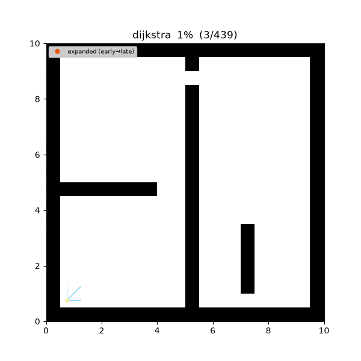
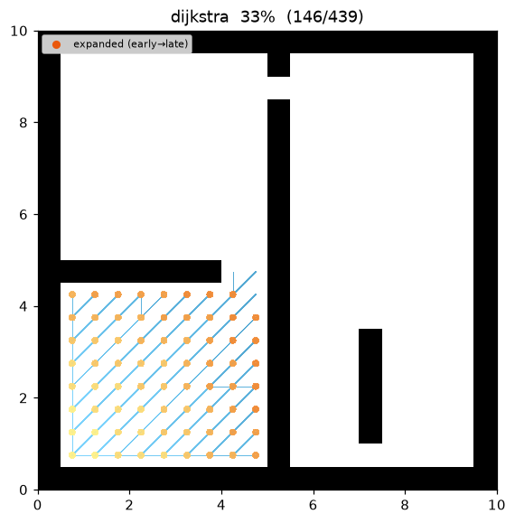
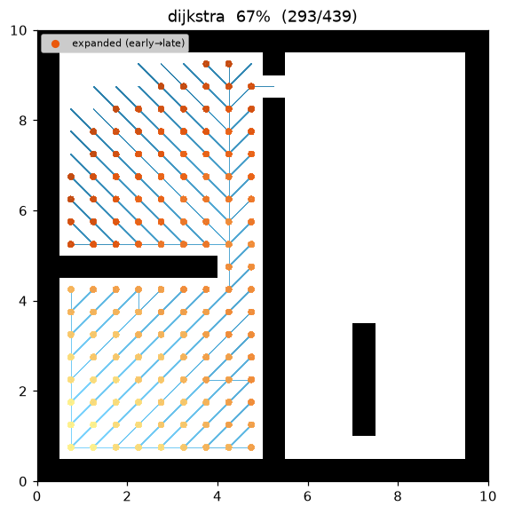
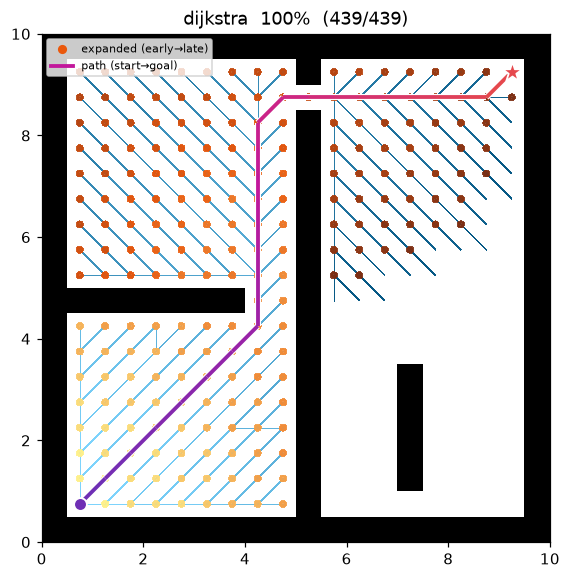
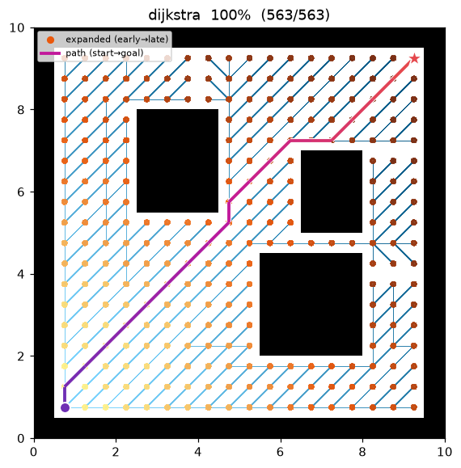

Dijkstra¶
| Item | Description |
|---|---|
| Category | uninformed graph search (uniform-cost) |
| Required capability | DiscreteSpace |
| Completeness | complete (finite graphs, non-negative costs) |
| Optimality | cost-optimal |
| Complexity | time O((V+E) log V) (binary heap), space O(V) |
| Original paper | Dijkstra (1959) 1 |
Background¶
Dijkstra's algorithm1 finds single-source shortest paths on graphs with non-negative edge costs. Published in 1959 as a three-page paper, it has been the root of every cost-based path search since. Where BFS grows the frontier in order of "edge count", Dijkstra grows it in order of "accumulated cost g" — it is an uninformed search in that it uses no information (heuristic) pointing toward the goal, and A* is what you get by adding a heuristic to it (A* with h ≡ 0 is exactly Dijkstra).
How It Works¶
Search on maze01. Unlike BFS, the frontier spreads along accumulated-cost contours (reflecting the √2 diagonal cost).

Intermediate search progress (left → right: early / middle / final path):
 |
 |
 |
Final result on open01:

The node with the smallest g value is popped from a priority queue and settled. With non-negative costs, the g value at the moment of settling is guaranteed to be the shortest cost to that node (the justification of the greedy choice — the paper's central argument). Relaxation toward each neighbor updates g whenever a shorter path is discovered.
DIJKSTRA(start, goal):
g[start] ← 0; open ← priority queue keyed by g
while open is not empty:
v ← open.pop_min() # minimum g — v's shortest cost is settled here
if v == goal: return reconstruct(v)
if v already settled: continue # lazy deletion (see the corollary below)
for (u, c) in neighbors(v):
if g[v] + c < g[u]: # relaxation
g[u] ← g[v] + c; parent[u] ← v
open.push(u, g[u])
return failure
Measurements (Python, trace on):
| map | path cost | expanded nodes | path len |
|---|---|---|---|
| maze01 | 28.728 | 211 | 26 |
| open01 | 25.213 | 267 | 20 |
The path cost is identical to A* (both are optimal), while the number of expanded nodes is roughly 2–4× that of A* — with no heuristic, the search spreads evenly, even away from the goal.
Reproduce:
python python/demos/demo_dijkstra.py \
--map maps/grid/maze01.yaml --scenario maps/scenarios/maze01_s1.yaml \
--params configs/global_planning/dijkstra.yaml --trace out/dijkstra.jsonl
python tools/viz/replay.py out/dijkstra.jsonl --gif out/dijkstra.gif
Properties¶
- Completeness: on a finite graph with non-negative costs, a solution is found if one exists.
- Optimality: the returned path is cost-optimal. (This does not hold with negative edges — that is Bellman-Ford territory.)
- Complexity: O((V+E) log V) with a binary heap. The Fibonacci-heap theoretical bound is O(E + V log V), but in practice a binary heap with lazy deletion is the norm.
Optimality Proof (correctness at settle time)¶
Assume non-negative weights \(w(u,v)\ge 0\). Let \(\delta(s,u)\) be the shortest cost from \(s\) to \(u\).
Lemma 0 (upper-bound invariant). Throughout the run, \(g[v]\ge\delta(s,v)\) for every node \(v\), and whenever \(g[v]<\infty\) it is the cost of an actual \(s\to v\) path.
Proof. Relaxation only lowers a value via \(g[u]\leftarrow g[v]+c(v,u)\), which is the cost of the real path "\(s\to v\) path \(+\) edge \((v,u)\)" and so is the cost of some real path, hence \(\ge\delta(s,u)\). The initial \(g[s]=0=\delta(s,s)\) and the remaining \(\infty\)'s satisfy the claim. ∎
Theorem (correct at settle time). When the priority queue extracts \(u\) (as the minimum \(g\)) and settles it, \(g[u]=\delta(s,u)\).
Proof (contradiction). Let \(u\) be the first node settled with \(g[u]>\delta(s,u)\) (\(u\ne s\) since \(g[s]=0=\delta(s,s)\)). Take a shortest path \(P:s\rightsquigarrow u\); let \(y\) be the first not-yet-settled node on \(P\) and \(x\) its predecessor (settled, \(g[x]=\delta(s,x)\)). Relaxing edge \((x,y)\) when \(x\) was settled gives
Since \(y\) precedes \(u\) on \(P\) and the remaining sub-path has non-negative cost, \(\delta(s,y)\le\delta(s,u)\). Combining,
Then the queue would extract \(y\) before \(u\) — contradiction. Hence \(g[u]=\delta(s,u)\) (the first inequality also uses \(g[y]\ge\delta(s,y)\) from Lemma 0, pinning \(g[y]=\delta(s,y)\)). Non-negativity is essential at the step \(\delta(s,y)\le\delta(s,u)\) (with negative edges it fails — Bellman–Ford territory). ∎
Corollary (invariant after settling → lazy deletion is valid). Once a node is settled its \(g\) is already \(\delta(s,\cdot)\) and, by Lemma 0, can never drop lower. So skipping the stale duplicate entries of that node when they are later popped (i.e. lazy deletion) cannot break optimality — correctness holds with duplicate insertions alone, no decrease-key structure needed.
Complexity. Binary heap: \(V\) extract-mins \(O(V\log V)\) plus \(E\) pushes on relaxation \(O(E\log V)\) → \(O((V+E)\log V)\). Lazy duplicates can grow the heap to \(O(E)\), but each entry is \(O(\log E)=O(\log V)\), so the asymptotic order is unchanged.
Emitted Trace Events¶
planning_started → (node_expanded, edge_added)* → path_found → planning_finished
References¶
-
Dijkstra, E. W. (1959). "A note on two problems in connexion with graphs." Numerische Mathematik, 1, 269–271. doi:10.1007/BF01386390 ↩↩